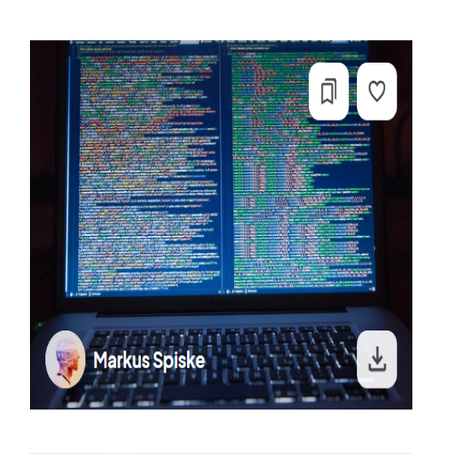
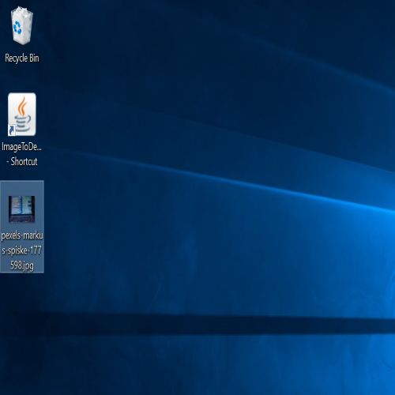
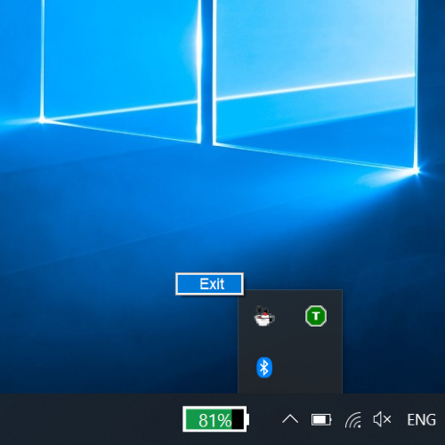

Image to Desktop is a very useful tool for creating projects
that require the user to download many images. It checks for new
images in the "Downloads" folder, and when an image is detected it
is automatically sent to "Desktop". Why keep "File Explorer" open,
when you can grab any image you need from the desktop?
Download here:
https://github.com/Luca-Alin/ImageToDesktop
Run the program
Download an image
Your image is on your Desktop
You can easily close the program
Install instructions
1. Click the following link: https://github.com/Luca-Alin/MinesweeperGame
2. Click the "Code" button, then click "Download ZIP"
3. Unzip the downloaded file, and click "ImageToDesktop.jar" (you may also create a shortcut for
easier access)
Requirements:
- Java Development Kit